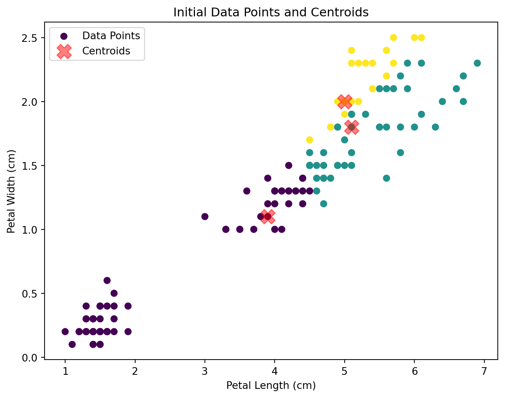
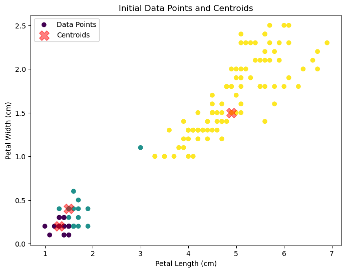
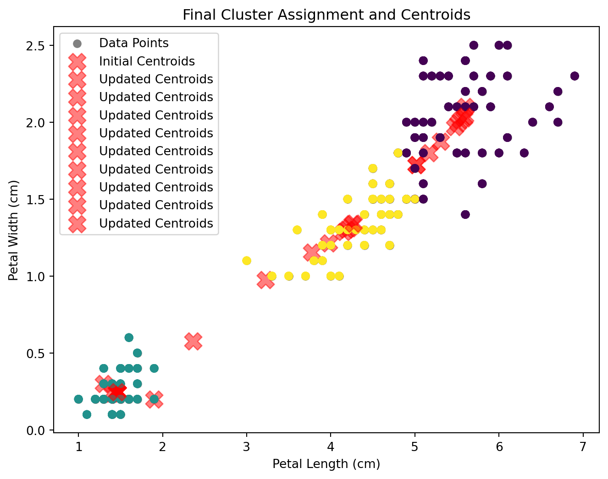
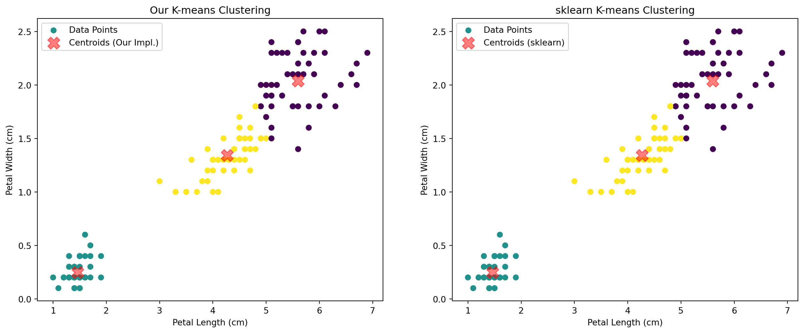
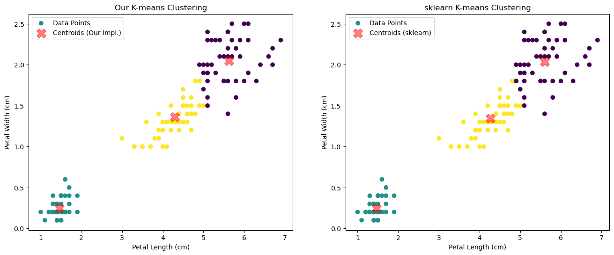
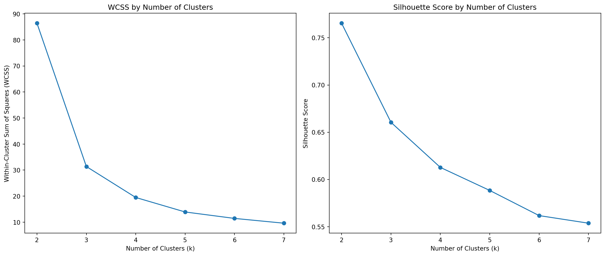

Segmentation involves aggregating prospective buyers into groups with common needs who respond similarly to a marketing action. It aids marketers in selecting a target market, designing a marketing mix, and making strategic decisions based on consumer sub-groups.
K-Means
K-means is a widely used unsupervised machine learning algorithm for clustering data into a predefined number of clusters, denoted as \(k\). The algorithm works iteratively to assign each data point to one of \(k\) groups based on the features that are provided. The basic steps of the K-means algorithm are:
Initialization: Randomly select \(k\) data points as the initial centroids.
Assignment: Assign each data point to the nearest centroid. Nearest is typically determined by the Euclidean distance between points.
Update: Recalculate the centroids as the mean of all data points assigned to each cluster.
Repeat: Repeat the assignment and update steps until the centroids do not change significantly or a maximum number of iterations is reached.
The goal of this assignment is to deepen our understanding of the K-means clustering algorithm by implementing it from scratch. This hands-on experience will help us grasp the mechanics behind the algorithm, see how it iteratively finds clusters, and visualize the changes at each step. This also involves comparing the results of our implementation with Python’s built-in kmeans function to assess its effectiveness and accuracy.
Iris Dataset
The Iris dataset is a classic dataset used in machine learning and statistics. It includes 150 samples from three species of Iris (Setosa, Versicolour, and Virginica), with 50 samples from each species. Each sample has the following features:
Sepal.Length: The length of the sepals in centimeters.
Sepal.Width: The width of the sepals in centimeters.
Petal.Length: The length of the petals in centimeters.
Petal.Width: The width of the petals in centimeters.
Species: The species of the iris plant (Setosa, Versicolour, Virginica).
import pandas as pd# Load the Iris datasetiris_data = pd.read_csv('./iris.csv')# Checking for missing values in the Iris datasetiris_missing_data = iris_data.isnull().sum()# Display the dataset and the missing data summaryiris_data.head(), iris_missing_data, iris_data.describe()
Now that we have a good understanding of the context and the data, we can proceed with the implementation of the K-means algorithm.
Initialization Code
import numpy as npimport matplotlib.pyplot as pltdef initialize_centroids(data, k):""" Randomly initialize centroids from the dataset. """ indices = np.random.choice(data.shape[0], k, replace=False) centroids = data[indices]return centroidsdef assign_clusters(data, centroids):""" Assign each data point to the nearest centroid. """ distances = np.sqrt(((data - centroids[:, np.newaxis])**2).sum(axis=2))return np.argmin(distances, axis=0)def k_means_init(data, k):""" Initialize the K-means clustering process. """# Initialize centroids centroids = initialize_centroids(data, k)# Initial assignment of points to centroids cluster_assignment = assign_clusters(data, centroids)return centroids, cluster_assignment# Use the 'Petal.Length' and 'Petal.Width' for clusteringdata_points = iris_data[['Petal.Length', 'Petal.Width']].values# Number of clustersk =3# Initialize the K-means processinitial_centroids, initial_clusters = k_means_init(data_points, k)# Plot the data points and centroidsplt.figure(figsize=(8, 6))plt.scatter(data_points[:, 0], data_points[:, 1], c=initial_clusters, cmap='viridis', marker='o', label='Data Points')plt.scatter(initial_centroids[:, 0], initial_centroids[:, 1], c='red', s=200, alpha=0.5, marker='X', label='Centroids')plt.title('Initial Data Points and Centroids')plt.xlabel('Petal Length (cm)')plt.ylabel('Petal Width (cm)')plt.legend()plt.show()


Here’s the initial step of our custom K-means clustering:
Centroids Initialization: We randomly selected three points from the dataset as the initial centroids (marked with red crosses).
Cluster Assignment: Each data point has been assigned to the nearest centroid, color-coded by cluster. This plot shows the distribution of data points based on Petal Length and Petal Width, along with the initial positioning of the centroids.
The next steps would involve recalculating the centroids based on the mean of the data points assigned to each cluster and then reassigning the data points based on these new centroids. This iterative process continues until the centroids no longer move significantly, indicating that the clusters have stabilized and the algorithm has found a reasonable partitioning of the data.
def update_centroids(data, cluster_assignment, k):""" Recompute the centroids based on current cluster assignments. """ new_centroids = np.array([data[cluster_assignment == i].mean(axis=0) for i inrange(k)])return new_centroidsdef k_means_algorithm(data, k, max_iterations=100, tol=1e-4):""" Full implementation of the K-means clustering algorithm with visualization. """# Initialize centroids centroids = initialize_centroids(data, k)# Plot initial centroids plt.figure(figsize=(8, 6)) plt.scatter(data[:, 0], data[:, 1], c='gray', marker='o', label='Data Points') plt.scatter(centroids[:, 0], centroids[:, 1], c='red', s=200, alpha=0.5, marker='X', label='Initial Centroids')for i inrange(max_iterations):# Assign points to the nearest centroid clusters = assign_clusters(data, centroids)# Calculate new centroids new_centroids = update_centroids(data, clusters, k)# Check for convergence (if centroids do not change)if np.all(np.abs(new_centroids - centroids) < tol):break centroids = new_centroids# Plotting each step plt.scatter(data[:, 0], data[:, 1], c=clusters, cmap='viridis', marker='o') plt.scatter(centroids[:, 0], centroids[:, 1], c='red', s=200, alpha=0.5, marker='X', label='Updated Centroids') plt.title('Final Cluster Assignment and Centroids') plt.xlabel('Petal Length (cm)') plt.ylabel('Petal Width (cm)') plt.legend() plt.show()return centroids, clusters# Applying the full K-means algorithm to the Iris datasetfinal_centroids, final_clusters = k_means_algorithm(data_points, k)

Here’s the result from our application of the K-means algorithm to the Iris dataset, focusing on Petal Length and Petal Width. The plot illustrates the algorithm’s progression, displaying final cluster assignments and centroid positions at convergence.
Visualization Explanation:
Data Points: Each dot represents an iris flower, colored according to its cluster assignment. This coloring updates as points are reassigned during the iterative process.
Centroids: Marked by red crosses, these centroids initially placed randomly, migrate towards the cluster mean, stabilizing when movements become negligible.
Observations from the Output:
Convergence: The centroids’ stabilization indicates that clusters are well-defined and stable, marking the end of the algorithm’s process.
Cluster Boundaries: The distinct boundaries between clusters highlight the algorithm’s success in effectively partitioning the dataset based on petal measurements.
Iterations: The algorithm continuously recalculates and updates centroid positions based on current cluster assignments, fine-tuning the groupings to natural data divisions until optimal clustering is achieved.
This depiction provides insight into the K-means algorithm’s methodical approach to segmenting data into coherent clusters, demonstrating its effectiveness through dynamic updates and eventual stabilization.
Sklearn Implementation Code
from sklearn.cluster import KMeans# Using sklearn's KMeans to perform clusteringsklearn_kmeans = KMeans(n_clusters=k, random_state=42)sklearn_kmeans.fit(data_points)# Centroids and labels from sklearn's implementationsklearn_centroids = sklearn_kmeans.cluster_centers_sklearn_labels = sklearn_kmeans.labels_# Plotting the results from our implementation and sklearn's implementation for comparisonplt.figure(figsize=(16, 6))# Our implementationplt.subplot(1, 2, 1)plt.scatter(data_points[:, 0], data_points[:, 1], c=final_clusters, cmap='viridis', marker='o', label='Data Points')plt.scatter(final_centroids[:, 0], final_centroids[:, 1], c='red', s=200, alpha=0.5, marker='X', label='Centroids (Our Impl.)')plt.title('Our K-means Clustering')plt.xlabel('Petal Length (cm)')plt.ylabel('Petal Width (cm)')plt.legend()# sklearn implementationplt.subplot(1, 2, 2)plt.scatter(data_points[:, 0], data_points[:, 1], c=sklearn_labels, cmap='viridis', marker='o', label='Data Points')plt.scatter(sklearn_centroids[:, 0], sklearn_centroids[:, 1], c='red', s=200, alpha=0.5, marker='X', label='Centroids (sklearn)')plt.title('sklearn K-means Clustering')plt.xlabel('Petal Length (cm)')plt.ylabel('Petal Width (cm)')plt.legend()plt.show()

Here are the comparison plots for the K-means clustering results using our custom implementation and the built-in KMeans from scikit-learn:

Observations:
Cluster Similarity: Both plots display similar clustering results, with each cluster distinctly grouping data points based on petal length and width. This indicates that our implementation behaves comparably to scikit-learn’s, achieving effective clustering.
Consistency: Both methods have successfully identified clusters that likely correspond to the different Iris species, showing the effectiveness of K-means in finding natural groupings in data.
Overall, this comparison validates our K-means implementation against a well-established library function, demonstrating that it performs robustly in clustering the Iris dataset.
Performance Metrics
Within-Cluster Sum of Squares (WCSS)
WCSS is a measure of the compactness of the clusters, which sums up the squared distances between each data point and its corresponding cluster centroid. Lower values of WCSS indicate that the data points are closer to their centroids, suggesting better cluster cohesion. Here’s how it helps:
Interpretation: A lower WCSS value means that the clusters are more dense and well-defined, which is desirable in clustering scenarios.
Usage: WCSS is often used in the “elbow method” to determine the optimal number of clusters \(k\). The idea is to plot WCSS as a function of \(k\) and look for the “elbow point” where the rate of decrease sharply shifts. This point typically suggests a suitable number of clusters beyond which increasing \(k\) brings diminishing returns in terms of additional separation.
Silhouette Score
The Silhouette Score is a measure of how similar an object is to its own cluster compared to other clusters. The score ranges from -1 to +1, where a high value indicates that the object is well matched to its own cluster and poorly matched to neighboring clusters. Here’s the significance of each component:
Components:
\(a(i)\): The average distance between a data point \(i\) and all other points in the same cluster.
\(b(i)\): The smallest average distance of \(i\) to all points in any other cluster, of which \(i\) is not a member.
Formula: The silhouette score for a single data point is calculated as follows: \[
s(i)=\frac{b(i) - a(i)}{\max(a(i), b(i))}
\]
Interpretation: A score close to +1 indicates that the data point is far away from its neighboring clusters. A score of 0 indicates that the point is on or very close to the decision boundary between two neighboring clusters. A negative score indicates that the data point might have been assigned to the wrong cluster.
from sklearn.metrics import silhouette_scoredef clustering_metrics(data, k_range): wcss = [] silhouette_scores = []for k in k_range: kmeans = KMeans(n_clusters=k, random_state=42) labels = kmeans.fit_predict(data)# WCSS (within-cluster sum of squares) wcss.append(kmeans.inertia_)# Silhouette Score (only for k > 1 to avoid error)if k >1: score = silhouette_score(data, labels) silhouette_scores.append(score)return wcss, silhouette_scores# Setting the range of kk_values =list(range(2, 8))# Calculating metrics for the Iris datasetiris_data_points = iris_data[['Petal.Length', 'Petal.Width']].values # Assuming iris_data is pre-loaded DataFrameiris_wcss, iris_silhouette = clustering_metrics(iris_data_points, k_values)# Plotting the resultsplt.figure(figsize=(14, 6))plt.subplot(1, 2, 1)plt.plot(k_values, iris_wcss, marker='o')plt.title('WCSS by Number of Clusters')plt.xlabel('Number of Clusters (k)')plt.ylabel('Within-Cluster Sum of Squares (WCSS)')plt.subplot(1, 2, 2)plt.plot(k_values, iris_silhouette, marker='o') # Corrected to use k_values that align with the silhouette scoresplt.title('Silhouette Score by Number of Clusters')plt.xlabel('Number of Clusters (k)')plt.ylabel('Silhouette Score')plt.tight_layout()plt.show()

Analysis of Plots:
WCSS Plot:
The WCSS decreases sharply as the number of clusters increases from 2 to 3, suggesting a significant gain in tightness of clusters.
Beyond \(k=3\), the decline in WCSS becomes less steep, indicating diminishing returns in cluster cohesion as more clusters are added.
Silhouette Score Plot:
The Silhouette Score is relatively high at \(k=3\), suggesting good separation and cohesion within the clusters.
The score drops slightly for \(k=4\) and further as \(k\) increases, indicating that the clusters become less distinct or less well separated as more clusters are added.
Based on these metrics:
WCSS: The elbow method suggests that \(k=3\) might be a good choice as the rate of decrease in WCSS slows significantly after this point.
Silhouette Score: The highest score occurs at \(k=3\), indicating that the clustering solution with three clusters provides a good balance of cohesion and separation.
Both metrics suggest that three clusters are optimal for this dataset, which aligns with the known division into three Iris species. This concurrence supports \(k=3\) as a robust choice for clustering the Iris dataset.
Conclusion
The K-means clustering was applied to the Iris dataset, particularly using the Petal.Length and Petal.Width features. This analysis aimed to explore the natural groupings within the data that correspond to the three Iris species. The clustering process included initializing centroids, assigning points to the nearest centroid, and iteratively adjusting these centroids until convergence.
Key Observations:
Cluster Formation: The algorithm effectively grouped the data points into clusters that correspond to the distinct Iris species, demonstrating its capability to detect patterns based on petal dimensions.
Metrics Evaluation: Both Within-Cluster Sum of Squares (WCSS) and Silhouette Scores were computed for a range of cluster counts (k = 2 to 7). These metrics helped identify the optimal number of clusters:
WCSS: Showed a significant drop at \(k = 3\), suggesting substantial improvement in cluster tightness with three groups.
Silhouette Scores: Peaked at \(k = 3\), indicating excellent separation and cohesion within clusters at this count.
The analysis confirmed that \(k = 3\) clusters provide a robust solution for this dataset, aligning well with the known classification of the Iris species into three types based on petal features. This outcome validates the effectiveness of K-means clustering in extracting meaningful insights from biological data, where natural groupings exist based on morphological traits.